As your website runs on WordPress as CMS it has 2 views, one public view which is what your site visitors will see—and the admin view which you can access via a login only. To edit the site's content for updates, edits or changes - you can use the admin functions.
I'd recommend to work in different browser tabs as you edit your site, or 2 different windows if you prefer. You work in the admin window for the edits, save your edits and then go to the public site to refresh the page and see your changes immediately. This will allow you to check whether your edits are working as planned.
If you need to un-do a change - you will be able to go back via the revisions panel in your post's editor.
To log in to work on the website - go to http://woodtechinteriors.co.uk/wp-admin and type in your username and password. You can log out via your profile link in the top right corner in the admin section.
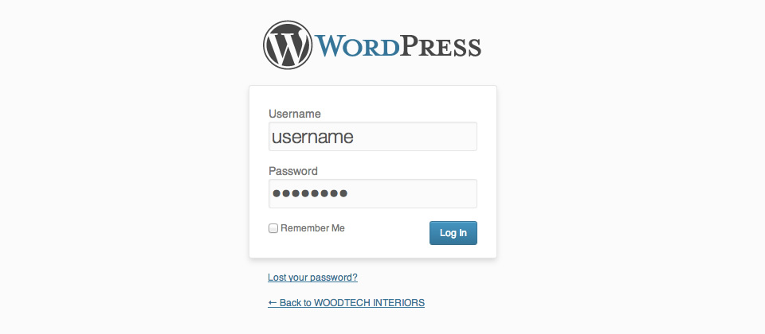
dashboard
Once logged in - you will see the dashboard which gives a quick overview of the site’s content. All admin options are displayed within the left side panel, organised by content type and admin options. The right panel gives you a quick overview of the site and published content. Bear in mind that both your gallery and your testimonial section are custom made for you and will not appear here.
As you can see - your site's content primarily uses pages.
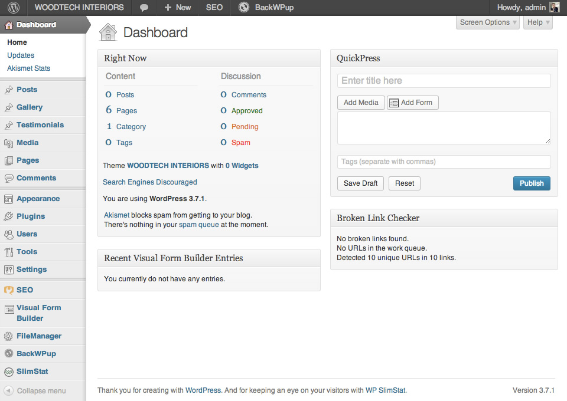
dashboard menu options
The main menu options and their usage are:
Dashboard
your site's overview, the first screen once you log in
Posts
your site does not include any posts, typically used for news sections or blogs
Gallery
for "our work" section
Testimonials
for "what our clients say" section
Media
lists all uploaded media files, such as photos
Pages
this is where you update all your pages
Comments
your site does not include any comments which would usually be used for posts, typically used for news sections or blogs
Appearance
shows theme options. For your site, there are no widgets in place so any changes will not yield results as this is not implemented.
Plugins
your Akismet settings: Akismet is a powerful spam filter for WordPress and needs a key to be activated.
Users
shows all the existing users of your site. You can setup new users, if Simon ever wants to post to the site - you could set him up as user, for example.
Settings
this is where your site is configured.
content types
Before you can start editing the existing content or add a new piece - a quick word on the different content types used for the website. All are editable and are made to fit your purpose.
Your WordPress setup works with 3 different types of content:
Pages
Your website's section and additional content are all presented as pages. Some split into sections, but all editable as individual pages. Additional content such as the request form and cookie policy are also pages, linked where relevant.
Galleries
the "our work" section consists of your listed galleries, each editable individually + function to add new galleries
Testimonials
for the "what our clients say" section - editor for message and author
updating existing content
editing pages
To edit the content of any of the pages - click on Pages which will drop down 2 options.
All Pages
will show all existing pages, ordered by date
Add New
will allow for adding a new page
When hovering over a page’s panel within the listing - you will see the edit options appear underneath the page title.
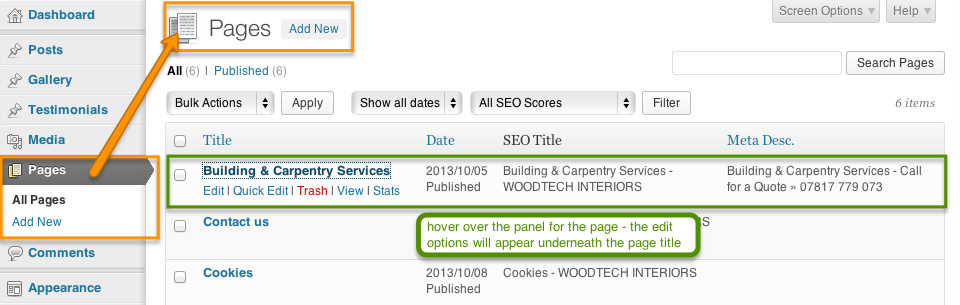
Edit
click to access the text editor with all options
Quick Edit
click to edit details only, such as publish date, author or page status
Trash
click to move page into the trash (will not permanently delete)
View
click to view the page on the public face
Once you click 'Edit' - you will be taken to the page’s editor. Here, you will be able to change the content, add new text or images to the existing content, and update the current page.
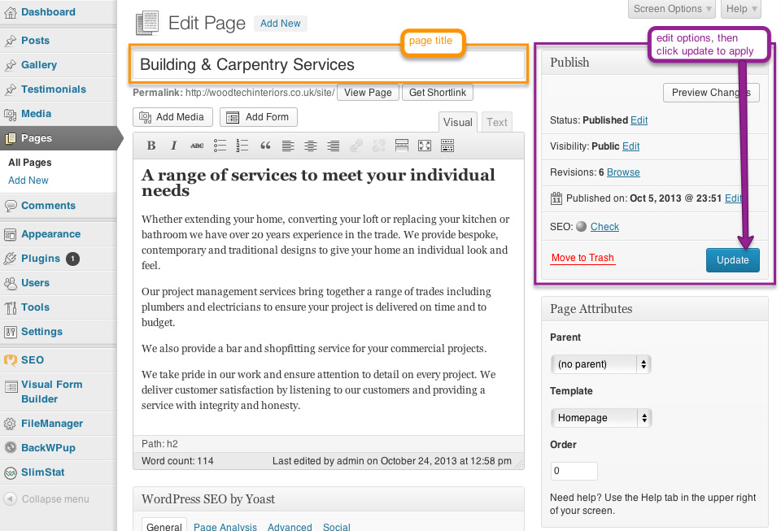
editing post content
no posts at the moment :)
To edit the content of any of the posts - click on Posts which will drop down 4 options
All Posts
will show all existing posts, ordered by date
Add New
will allow for adding a new post
Categories
will show existing categories
Tags
will show tags used and allow addition of new tags
editing client testimonials
Testimonials
will show all existing testimonials, ordered by date
Add New
will allow for adding a new testimonial
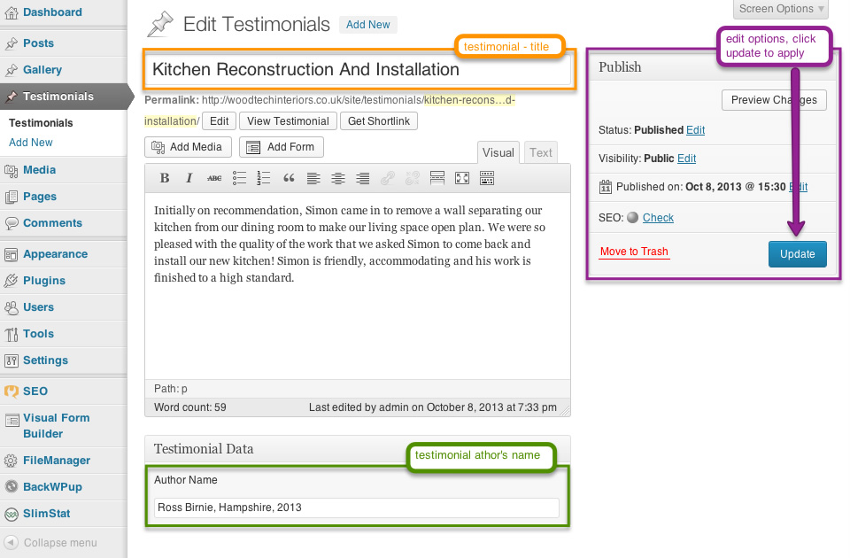
editing gallery
To edit excisting gallery - click on Gallery, which will drop down 3 options:
All Galleries
will show all galleries, ordered by date
Add New
will allow for adding a new gallery
Categories
gallery categories
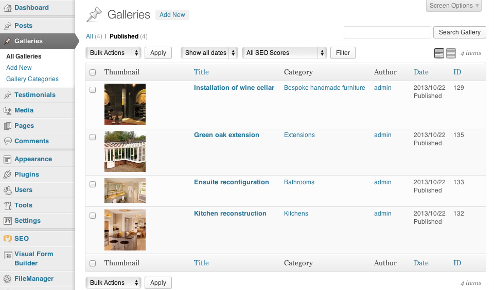
edit category description / add image
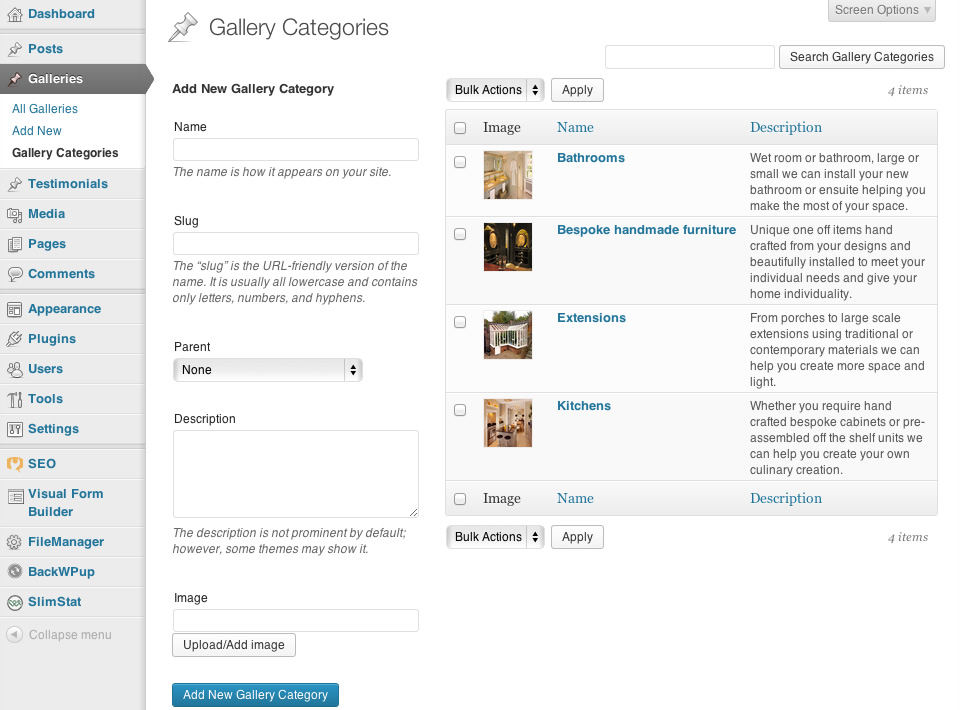
edit gallery
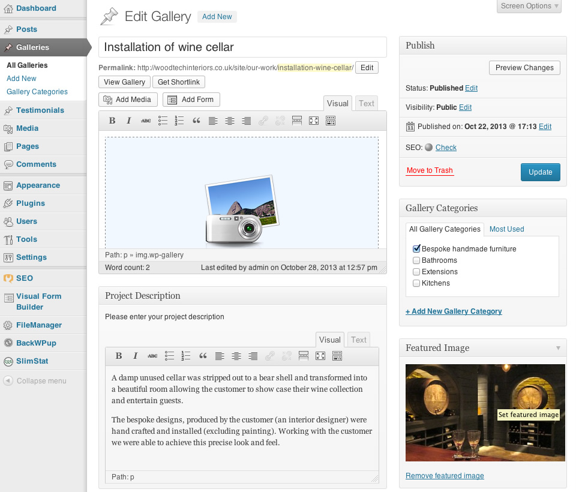
publishing new content
adding new page
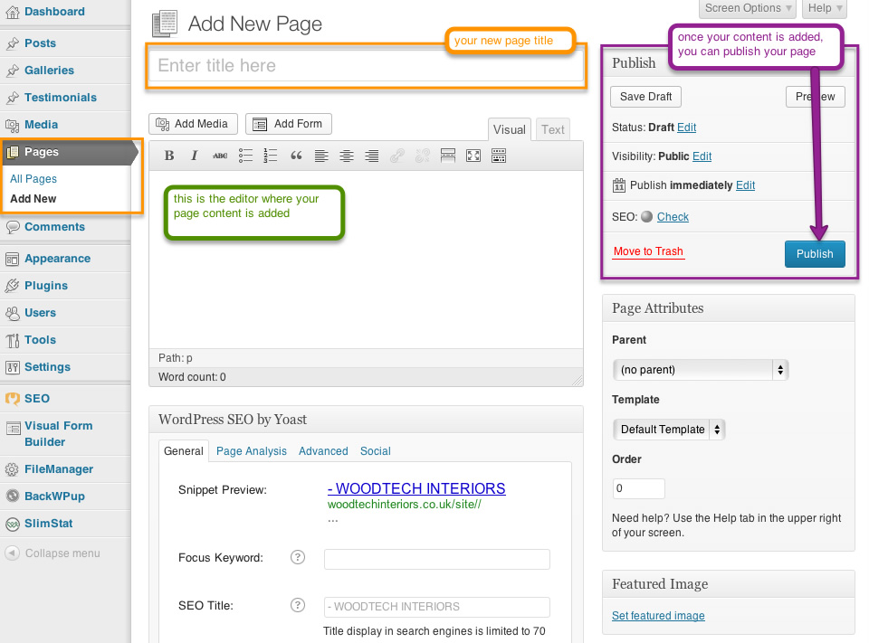
adding new testimonial
adding project to image gallery
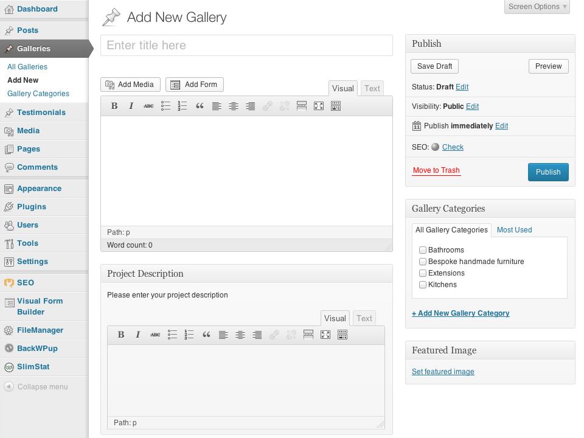
working with media
All uploaded files will be collected in the Media Library - where you can choose to view all files, add new files to the collection or delete existing files.
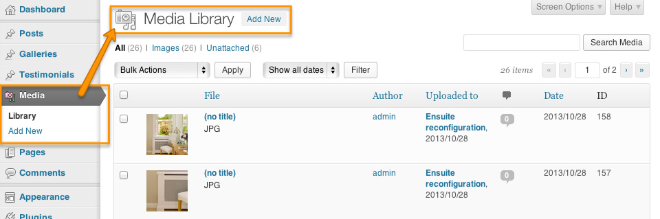
Though you can upload new files via the Media tab - you can also do this while editing the relevant page/post instead ~ which might be more convenient.
The Medial Library is also where you will be able to delete unused media such as the custom header photos, or old and outdated forms or leaflets.
You could of course keep older material online as backup or future reference. Your server hosting is what will determine how much storage space you have.
custom settings
Menu
!! warning !!
If the set structure is changed - the current design and colouring of the menu links will fail.